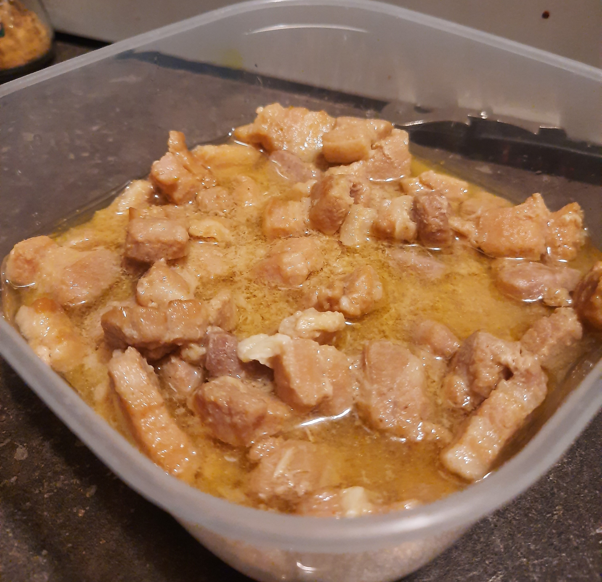

Braised pork

Braised pork or Hong-Ba (as our mother called it)
Yada yada
Ingredients
- Pork belly
- Garlic
- Sweet soy sauce
- Light soy sauce
- (Brown) Sugar
Steps
- You marinate pork with soy sauce and chicken powder for like more than 15 min.
- Garlic dar pyar yite.
- Heat the oil on low heat.
- Add 1.5 table spoon of brown sugar.
- When the sugar dissolves, add the garlic and fry it super fast before it even has a chance to get burnt.
- Add the pork and fry more.
- Add water till it fully submerge the pork.
- Keep on cooking till all the water is gone.